Big Orange Crayonmusical thingsPopFest! New England 2004 Northampton, MA November 4-6, 2004 PopFest was amazing! I didn't get to go to the first day, and I missed a bit of the second day because I'm dumb and forgot that when I want to go to Northampton, I should drive to Northampton, not North Adams. Whoops! Anyway, it was really great once I got there; there were so many good bands that I almost exploded. Special thanks to Nate and Becky for letting me sleep on their couch and to William for putting everything together! Day Two! Brasilia 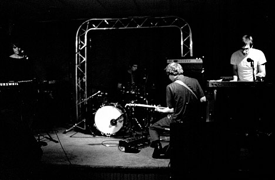 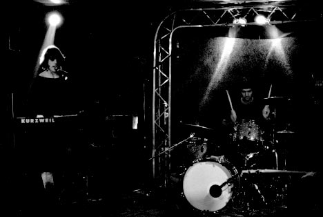 Shumai 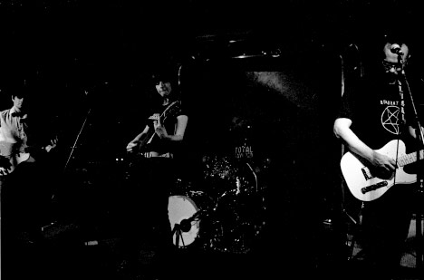 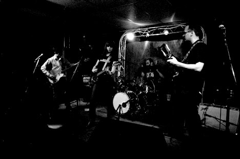 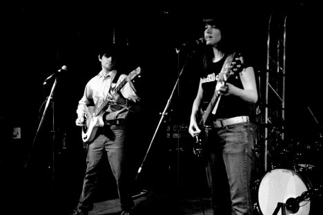 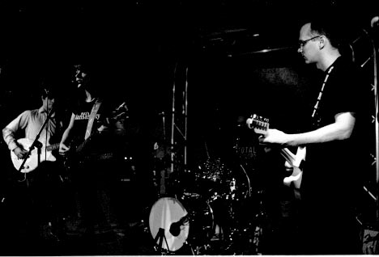 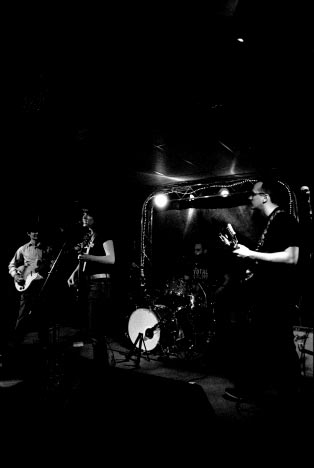 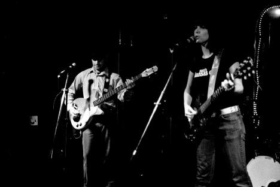 Colin Clary & the Magogs 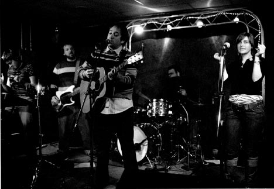 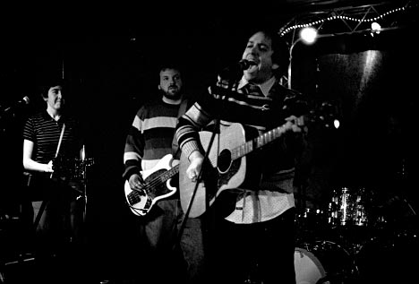 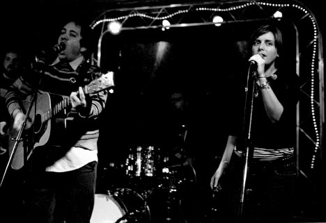 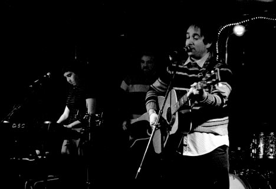 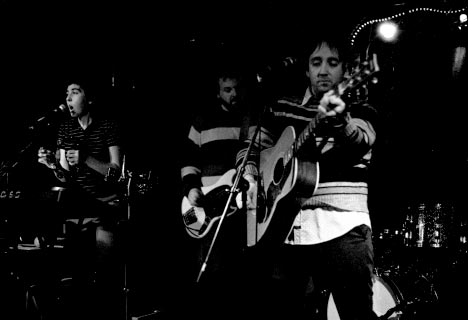 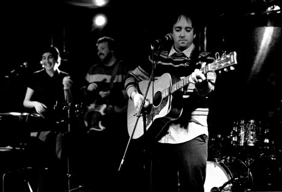 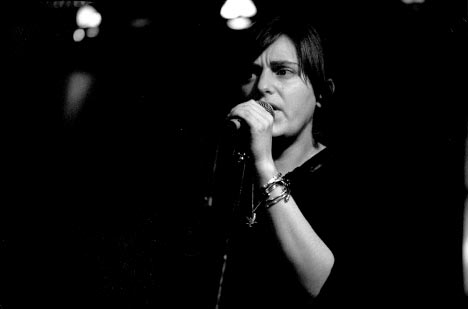 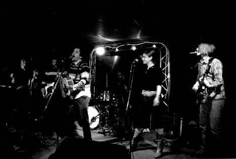 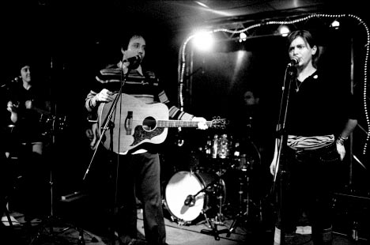 The Consultants 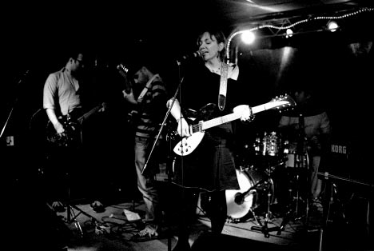 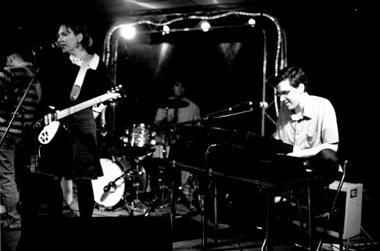 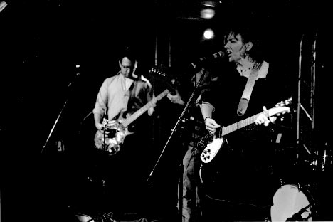 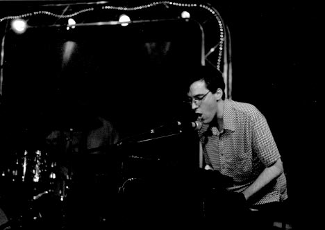 The Baskervilles 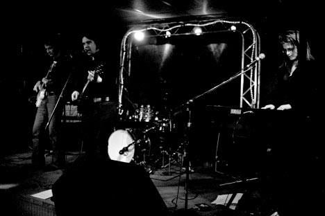 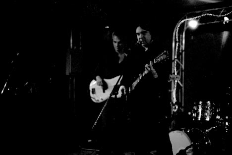 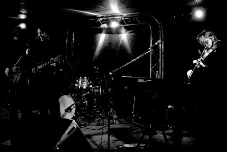 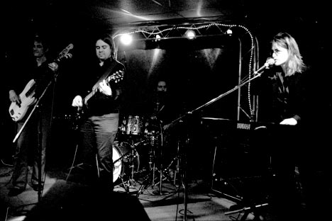 On to day three! Camera notes: Fuji Neopan 1600 rated at 1600, developed in Rodinal (1:100) at 18 degrees for 25 minutes. Please don't use these elsewhere unless you are in one of the bands or are a nice person. |